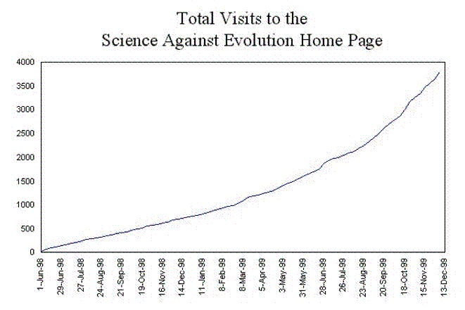

| About Us - December 1999 |

We started counting the number of visits to the web site on June 1, 1998. It took 273 days for us to get 1,000 visits. But then it took only 140 more days to reach 2,000 visits. We reached 3,000 visits just 91 days later. Since November 15, we have been consistently getting more than 100 visits per week, so we expect to have our 4,000th visit on December 20. (In fact, we had a total of 4002 visits by December 20, 1999.) If we do, that will mean that it took just 63 days to get the fourth 1,000 visits.
Although we know how many times our home page is being read, we don't know who is reading it. Therefore, we can't tell if 4,000 people have read our home page once, or if one person has read our home page 4,000 times.
There are several possible reasons why the number of visits is increasing each week. Hopefully, some people like what they read and keep coming back to read more. But there are other possible explanations. It could be that more search engines have found our site, so it is easier for people to find us. It is certainly true that the number of people connected to the Internet is growing every day, so we may still be getting the same percentage of a larger number of users. We know of several other sites that have asked permission to link to ours, so we may get visitors from these other sites. It may be that there is simply more interest in creation and evolution these days.
Whatever the reason, we know that we were getting about 20 visits per week in the summer of 1998, and now we get five times that amount. That's encouraging. Thanks for visiting!
| Quick links to | |||
|---|---|---|---|
| Science Against Evolution Home page |
Back issues of Disclosure (our newsletter) |
Web Site of the Month |
Topical Index |